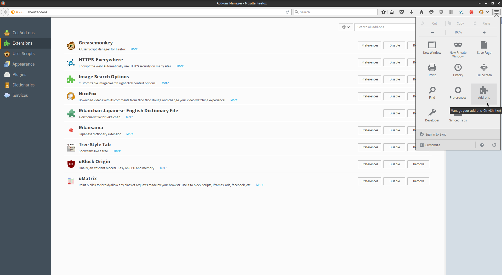
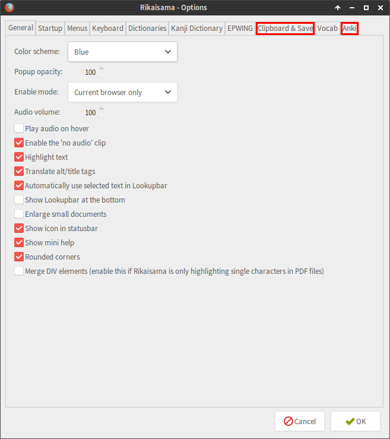
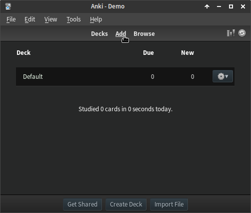
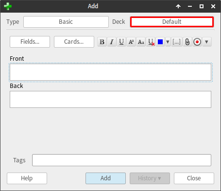
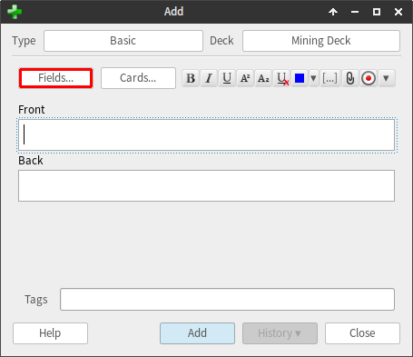
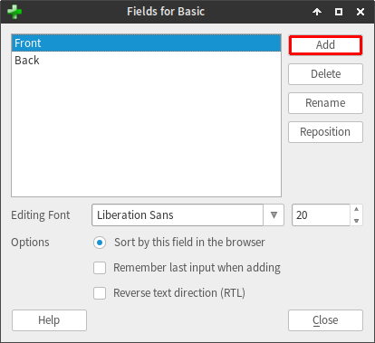
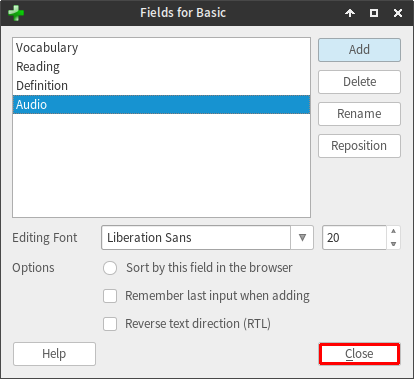
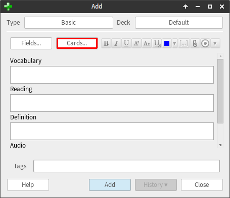
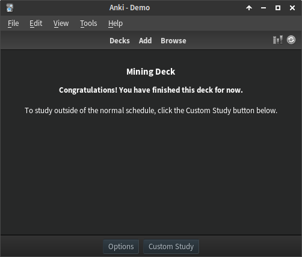

Download Anki: http://ankisrs.net
Download the Core 2K/6K deck here (it already has sounds included):
Download from the above link. Do not download the poorly formatted Core decks on AnkiWeb.
Add it to Anki (drag and drop/'Import File' button on the bottom of Anki window/Ctrl+I).
Download media the deck uses (Card images):
http://www.mediafire.com/download/nrvpcx9a766nh1t/core2k-image.munged.rar
Unrar the media content and paste into your Anki 'collection.media' folder (remember to paste files, not a folder with files). Every file should by default have following access path:
C:\Users\____\AppData\Roaming\Anki2\_____\collection.media
Add the card images to the card format: Hit "Browse" -> Navigate to the Core deck on the left sidebar -> Hit the "Cards..." button -> Add {{Sentence-Image}} under the <br> at the bottom of the "Back Template" section.
Remove the review limit by going to the deck options and under the "Reviews" tab and setting "Maximum reviews/day" to 9999 (Don't be alarmed by this number, it likely won't go above 200-350 in the long run at decent retention with 20-30 new cards a day, the point is more to set it to something you'll never hit)
Learn. The first word in the deck should be それ. If you see a different word before that, you need to fix your settings: Go to the deck options and set the order to "Show new cards in order added".
Images aren't really required for this deck, most people don't use them so feel free to omit steps 4-6.
Retention Tips / Misc comments and common opinions (note that most of these are highly personal preference and your mileage may vary, so make up your own mind about doing any of this stuff):
• Some people like doing new cards separate from reviews since it prevents a bunch of new cards from all piling up at the end of your session, and means that you're mentally 'fresh' when facing them. If you want to do this, there is an option to do new cards before (or after) reviews in Anki's preferences.
• Going into the deck, hitting the "Custom Study" button, selecting "Review forgotten cards", leaving it at 1 day, and hitting okay will create a temporary deck with all of the cards you hit again on that day so you can do focused reviewing of cards that gave you trouble. This also gets cards you hit "again" on while doing new cards. You can delete the custom study deck after you're done with it and the cards will go back to their decks.
• Increasing the number of steps on new cards (deck options -> changing the "1 10" under "Steps" on the "New" tab) can also help retention with new words since it makes you get the words correct more times in a row before letting them move on to the next day, but it also means new cards take longer to do. "1 1 10", "1 10 20", "1 1 10 20", etc. whatever works best to you.
• Be aware of the "learn ahead" option in Anki's settings. This is what's letting you see a card you just hit "Again (10m)" on. Lowering it or even setting it to 0 could help you learn/relearn words since it forces you to wait the entire interval before letting you guess again, but it could also make doing reviews and new cards a bit more tedious and time consuming. If you have new card / relearn reviews on your decks you were recently doing but it's not letting you do them, this setting is likely why.
• If you want to keep track of what kanji are in words you know, then try the kanji grid add-on.
Kanji are sometimes displayed incorrectly on mobile devices. You can fix this by using a custom font. Download a .ttf font (available from the library study resource page, select the 字体 label or this torrent.) Then, follow the instructions in the Anki manual to install it.
This guide assumes you have already installed Yomichan and added the JMdict dictionary to it. If you have not yet done this, see the Yomichan webpage for instructions.
Yomichan can be set up to automatically create Anki cards from the words which you hover over with it. In order to do this, it is necessary to install Yomichan's companion Anki add-on called AnkiConnect. The installation is no different from that of any other Anki add-on and there is no post-install configuration necessary. See the AnkiConnect page on the Yomichan website for instructions.
After you have installed AnkiConnect, you will need to create a deck in Anki to add the words to, assuming you have not done so already. This guide will assume you want to create a deck containing the following information:
• The word written in kanji.
• The word written in kana.
• The word written in kanji, with accompanying furigana.
• The definition of the word.
• Audio of the word being spoken by a native speaker (if available).
We want 5 seperate pieces of information, so this means our deck will need 5 seperate fields to house said information. To get started, we will need to open Anki and click on the "Create Deck" button at the bottom of the window. We will then be presented with a pop-up asking us what we wish to call our deck - I will be using the name "Japanese Vocabulary", but feel free to call it whatever you want.
Once the deck has been created, click on it to select it, then press the "Add" button at the top of the screen. This will present us with a pop-up window allowing us to not only add cards to the deck, but also change various things about the deck itself. Our first order of business is creating a new note type to use for our deck. Begin by clicking the button next to the word "Type" (the button itself will most likely say "Basic"), which will open up another pop-up window. From here, our actions will involve clicking more buttons in order to open yet more pop-up windows:
Manage -> Add -> Select "Clone: Basic" and then "OK" -> Type in name (e.g. Yomi) and then click "OK" -> Close -> Select "Yomi" and then click "Choose"
Having fun yet? Now it's time to create our new fields and delete the default ones. To begin, click the "Fields..." button to open up yet another pop-up window. Our first order of business is to click the "Add" button in order to create our new fields:
Expression
Meaning
Reading
Furigana
Audio
Once done, select the default fields and click "Delete" to get rid of them, then close the pop-up to return to the original "Add" pop-up window. The final thing we need to do in Anki is edit the appearance of the cards themselves. Begin by clicking the "Cards..." button. Here's where things get subjective, but I like to keep my cards simple. If you wish to copy my formatting, then simply add the text below to the relevant sections:
For the font I use, see here.
Once you've got your card formatting how you want it, simply close the window, along with any remaining pop-up windows (making sure to leave Anki itself open!).
Now that we're done with Anki, we need to make our way over to Yomichan's settings and tick the "Enable Anki integration" checkbox. Upon doing so, a bunch of new options should appear. We are interested in the options in the "Terms" section. First off, under "Deck", we want to select the deck which we just created (Japanese Vocabulary), and under "Model" we want to select the note type which we just created (Yomi). The "Terms" section should now display our newly created fields, so all that's left from here is to assign corresponding "Markers" to them (see the Yomichan webpage for a full list of options).
Expression - {expression}
Meaning - {glossary}
Reading - {reading}
Furigana - {furigana}
Audio - {audio}
Alternatively, you can use {glossary-brief} for the Meaning field. {glossary} contains information about the word, such as whether it is a noun, verb, etc. and what dictionary the definition is being taken from. {glossary-brief} contains no other information besides the definitions themselves.
Another alternative is using {furigana-plain} instead of {furigana}. {furigana} uses HTML ruby text to display the furigana, while {furigana-plain} uses the method of applying furigana provided by the "Japanese Support" Anki addon.
And with that, we're done! To test that you've set everything up properly, try hovering over the following word and clicking the green + button which should now be present in Yomichan's pop-up: 満面笑顔
If you're not satisfied with Yomichan's default formatting of definitions, there are alternative templates. Simply copy the contents of the linked template into the template box under the Anki Options section of Yomichan's settings (make sure you have the Show advanced options checkbox ticked), making sure to replace the existing values (and also making sure that you are using {glossary-brief} or {glossary}, as appropriate).
{glossary}: Default template
{glossary}: Give single definitions their own bullet point.
Use this template.
If you want space between numbered items like in the preview, add ul { margin-top:10px; margin-bottom:18px; } to your card styling.
{glossary-brief}: Default template
{glossary-brief}: Compressed like Rikai-sama.
Use this template.
Rikaisama's real-time import feature allows you to quickly add new words to your mining deck. (See the guide for an explanation of mining.)
After installing both of the above, open Firefox, make your way over to the add-ons management page, locate the Rikaisama add-on, and hit the "Preferences" button to open up the Rikaisama options window.
We are interested in two tabs here: "Clipboard & Save" and "Anki".
Go to the "Clipboard & Save" tab. The only thing we are interested in here is the "Saved audio" field (you can skip this part if you are not interested in having audio on your cards). You need to point this field to Anki's "collection.media" folder, which should be located inside a folder called "Anki2" within your computer's "AppData" folder (type %APPDATA%\Anki2 in the location field).
Now, onto the "Anki" tab. The first field we are interested in here is:
This is where we tell Rikaisama what information we want it to save about a particular word. Here is a typical example:
There is a key below the "Save format" field explaining what all of this does. The $d option saves the dictionary form of the word you have hovered over (meaning 食べます, for example, would be saved as 食べる). The $t option is used to denote the end of one field (i.e. those in the "Field names" field) and the beginning of another. $r saves the reading, and $n the definition. Finally, [sound:$a] saves an audio clip of the word (if available).
You will notice in the above example that $a has not been used alone, but rather enclosed in square brackets and preceded by "sound:". This is because audio files must be formatted this way for Anki to play them. If you only put "audio.mp3" into one of your Anki fields (as opposed to "[sound:audio.mp3]"), you would simply get the text "audio.mp3" on your card.
The next field tells Rikaisama to which fields in our Anki deck the information specified in the "Save format" field should be added. A typical example, corresponding to the "Save format" above, would be:
These fields MUST exist in our Anki deck in order for this to work. First, create your deck is Anki by pressing the "Add" button.
Click the "Deck" button
then "Add".

Type in the name of your new deck in the window that pops up and hit "OK".
Now we need to add the required fields. Hit the "Fields..." button.
Since all decks must have at least one field, we will first click "Add"
type in "Vocabulary" and then hit "OK". We should now have a field called "Vocabulary" in our deck, so we can go ahead and delete the default fields "Front" and "Back" by selecting them and clicking "Delete". Now repeat the adding process for the other required fields: "Reading", "Definition" and "Audio". Once done, hit "Close".
Now all that's left to do is edit the appearance of our cards. To do this, click the "Cards..." button. 
This is outside the scope of this tutorial, but at the following pastebin link you will find a sample which you can copy and paste: http://pastebin.com/HWk3Nnm6
And that's it! Now open your deck by clicking on it
and try adding your very first word: 幼女 - just hover over it with your mouse with Rikaisama enabled and hit "r"!
If you followed the instructions and it still does not work, manually add a new card to your mining deck and try again.
Similar to Core 6k with audio, image and example sentences but sourced from pretty much any voiced media including anime and visual novels. This approach also works for sentence cards. An example of which can be found here.
It is assumed that you are already familiar with Yomichan. Make sure to have fields for an image, audio and sentences on the back of your cards. If unsure, refer to the section on Yomichan, above.
ShareX is an open source productivity tool with various functions including but not limited to recording audio, video and screenshots that are made available to your clipboard for instantly pasting captured media into an Anki card. This requires some setting up prior to being ready for this method of mining.
It is recommended to create several different shortcuts for all of the functions to be used for card creation. What you need is recording audio and taking screenshots.
Quality and command line settings can be tweaked to person preferences, such as adjusting the volume if the recording is too loud.
Now the assigned shortcut can be used to capture any audio playing on the computer and have it save as an mp3 in the clipboard, which can be pasted directly into an Anki card field. Additionally, ShareX can be set up to save all recorded files somewhere, which is a useful function to use.
Two different functions are used depending on the source for the Anki cards. "capture active window" is more useful for visual novels while "capture region (transparent)" is more useful for most other things. The important thing here is that the capture file is copied to the clipboard so it can be pasted into Anki.
video.fluentcards is an extremely useful website because it lets you click on any subtitle and instantly be taken to the subtitle which is being spoken. Using the shortcuts established earlier it is now easy to grab audio and screenshots for Anki. A nice feature of this site is that it allows the user to capture multiple lines of subtitles without issue. Unfortunately, it does not support all file types but HEVC files should be fine.
This is a video example of the card making process.
Here or kitsunekko.
The library has a page for study resources (勉強資料) that has a varied assortment of other Anki decks. If you have an interest, have a look here.
{kind=link}
{kind=link}
{kind=link}